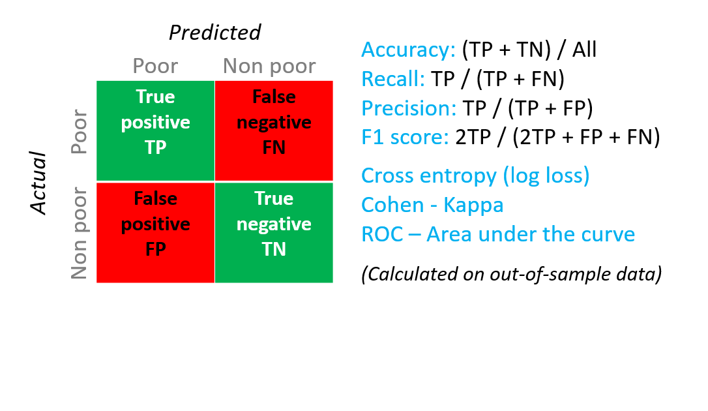
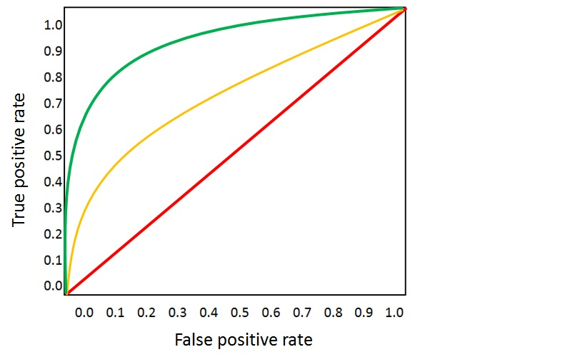

Evaluating a Binary Classification Model
In a binary classification scenario, the target variable has only two possible outcomes, for example: {0, 1} or {false, true}, {negative, positive}. Assume we are given a dataset of adult employees with some demographic and employment variables, and that we are asked to predict the income level, a binary variable with the values {“<=50K”, “>50K”}. In other words, the negative class represents the employees who make less than or equal to 50K per year, and the positive class represents all other employees. As in the regression scenario, we would train a model, score some data, and evaluate the results.
The evaluation metrics available for binary classification models are: Accuracy, Precision, Recall, F1 Score, and AUC. In addition, the module outputs a confusion matrix showing the number of true positives, false negatives, false positives, and true negatives, as well as ROC, Precision/Recall, and Lift curves.
Accuracy is simply the proportion of correctly classified instances. It is usually the first metric we look at when evaluating a classifier. However, when the test data is unbalanced (where most of the instances belong to one of the classes), or we are more interested in the performance on either one of the classes, accuracy doesn’t really capture the effectiveness of a classifier. In the income level classification scenario, assume we are testing on some data where 99% of the instances represent people who earn less than or equal to 50K per year. It is possible to achieve a 0.99 accuracy by predicting the class “<=50K” for all instances. The classifier in this case appears to be doing a good job overall, but in reality, it fails to classify any of the high-income individuals (the 1%) correctly.
For that reason, it is helpful to compute additional metrics that capture more specific aspects of the evaluation. Before going into the details of such metrics, it is important to understand the confusion matrix of a binary classification evaluation. The class labels in the training set can take on only 2 possible values, which we usually refer to as positive or negative. The positive and negative instances that a classifier predicts correctly are called true positives (TP) and true negatives (TN), respectively. Similarly, the incorrectly classified instances are called false positives (FP) and false negatives (FN).
The confusion matrix is simply a table showing the number of instances that fall under each of these 4 categories. Machine Learning automatically decides which of the two classes in the dataset is the positive class. If the class labels are Boolean or integers, then the ‘true’ or ‘1’ labeled instances are assigned the positive class. If the labels are strings, as in the case of the income dataset, the labels are sorted alphabetically and the first level is chosen to be the negative class while the second level is the positive class.
Going back to the income classification problem, we would want to ask several evaluation questions that help us understand the performance of the classifier used. A very natural question is: ‘Out of the individuals whom the model predicted to be earning >50K (TP+FP), how many were classified correctly (TP)?’ This question can be answered by looking at the Precision of the model, which is the proportion of positives that are classified correctly: TP/(TP+FP). Another common question is “Out of all the high earning employees with income >50k (TP+FN), how many did the classifier classify correctly (TP)”. This is actually the Recall, or the true positive rate: TP/(TP+FN) of the classifier. we might notice that there is an obvious trade-off between precision and recall. For example, given a relatively balanced dataset, a classifier that predicts mostly positive instances, would have a high recall, but a rather low precision as many of the negative instances would be misclassified resulting in a large number of false positives.
Another related metric that is often used is the F1 Score, which takes both precision and recall into consideration. It is the harmonic mean of these 2 metrics and is computed as such: F1 = 2 (precision x recall) / (precision + recall). The F1 score is a good way to summarize the evaluation in a single number, but it’s always a good practice to look at both precision and recall together to better understand how a classifier behaves.
In addition, one can inspect the true positive rate vs. the false positive rate in the Receiver Operating Characteristic (ROC) curve and the corresponding Area Under the Curve (AUC) value. The closer this curve is to the upper left corner, the better the classifier’s performance is (that is maximizing the true positive rate while minimizing the false positive rate). Curves that are close to the diagonal of the plot, result from classifiers that tend to make predictions that are close to random guessing.
Metrics for classification models
The following metrics are reported when evaluating classification models. If we compare models, they are ranked by the metric we select for evaluation.
• Accuracy measures the goodness of a classification model as the proportion of true results to total cases.
• Precision is the proportion of true results over all positive results.
• Recall is the fraction of all correct results returned by the model.
• F-score is computed as the weighted average of precision and recall between 0 and 1, where the ideal F-score value is 1.
• The ROC (Receiver Operating Characteristics) is a curve obtained by plotting the true positive rate and the false positive rate for all possible values of the “probability threshold” that distinguishes the two classes. Most models generate a probability for each household to be poor; by default, a household will be classified as poor if this probability is > 50, otherwise as non-poor. This threshold can be changed (e.g., one could decide to classify a household as poor if the probability is >= 60%). Thresholds from 0 to 1 are used to generate the plot. The diagonal represents a non-informative model. A “curve” passing by the top right corner represents the perfect prediction (perfect separation between poor and non-poor; no matter what threshold is used, the prediction will be correct). The higher the area under the curve (the closer to 1), the better the model. A random-guess will have an AUC of 0.5.
• Average log loss is a single score used to express the penalty for wrong results. It is calculated as the difference between two probability distributions – the true one, and the one in the model.
• Training log loss is a single score that represents the advantage of the classifier over a random prediction. The log loss measures the uncertainty of wer model by comparing the probabilities it outputs to the known values (ground truth) in the labels. we want to minimize log loss for the model as a whole.